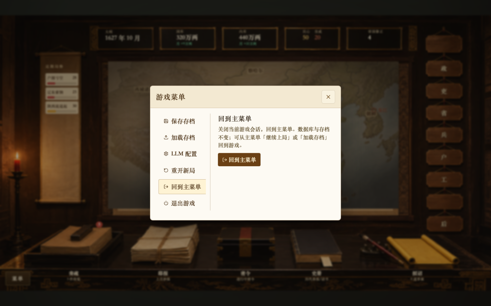
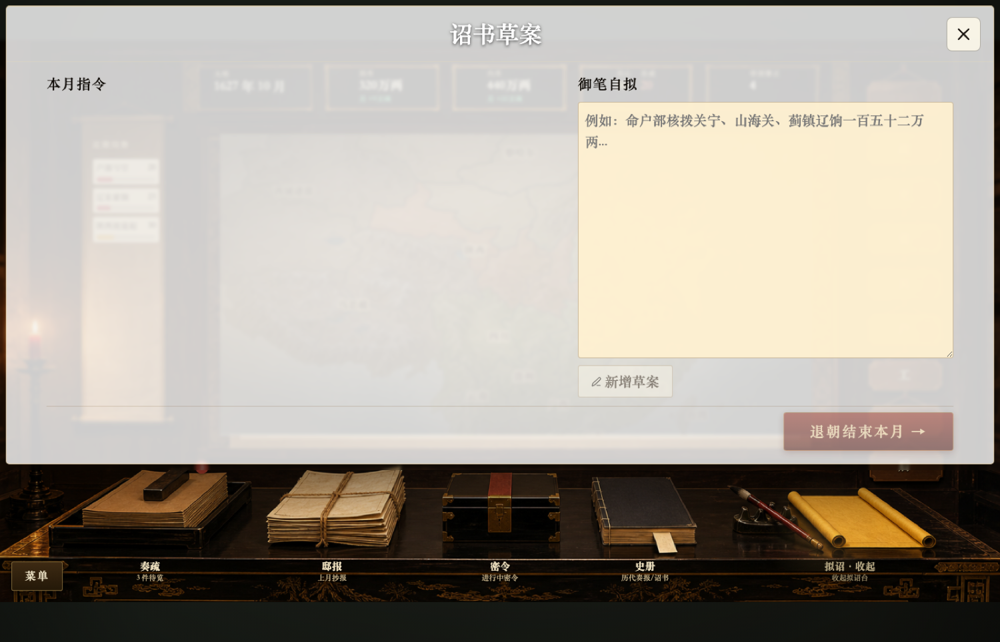
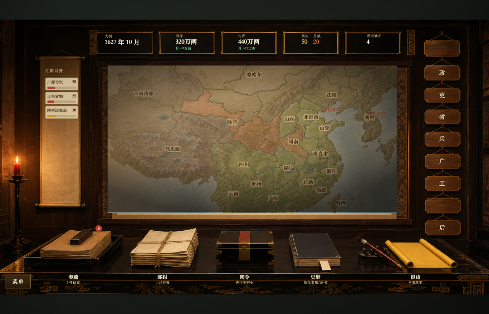
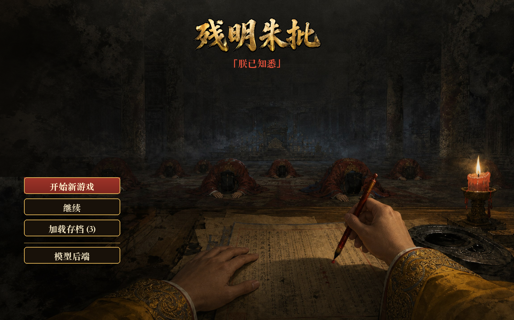
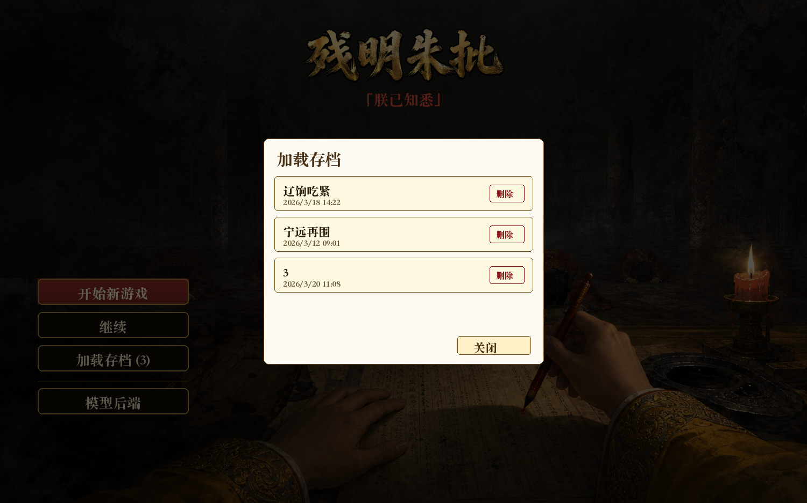

每一场景三格横排：现状（真截图 +「点这里」）→ 现状之恶（同屏盖浏览器原生灰框）→ 提案（同屏就地：有面板则直通，无面板则贴身展开）。 截图即游戏真屏。文案均为票面原句。
入口：HUD 左下「菜单」→ 游戏菜单 → 左列「回到主菜单」→ 点右侧棕色按钮 ·
gameMenu.tsx:230
· 屏：局内 HUD + 游戏菜单白卡

关闭当前游戏会话，回到主菜单。数据库与存档不变；可从主菜单「继续上局」或「加载存档」回到游戏。
票面 confirm 原句并入面板作可见后果句；棕色按钮直接执行。结构性拆掉双重确认。
入口：HUD 左下「菜单」→ 游戏菜单 → 左列「重开新局」·
gameMenu.tsx:189
· 同屏左列入口位（红框）
清空主 DB，重置到开局。不可撤销。要保留当前局，先到「保存存档」。
授权强度不降：手打「重开」仍在面板原位。拆掉的是原生框这一层。
入口：底栏「拟诏」→ 诏书草案台 →「退朝结束本月 →」 ·
edictModal.tsx:59
· 无既有说明面 → 页脚贴身展开

无既有说明面，故不「直通」——在主钮旁/页脚长出确认条，补退朝语义。
入口：常规 HUD 局内 · hud.tsx:169

入口：启动主菜单 →「开始新游戏」 · menuPage.tsx:42
· 备档 main-menu-real 为错档，本格用生产海报合成构图。

入口：主菜单 →「加载存档」→ 行内删除 · menuPage.tsx:427

| 调用点 | 所在屏 | B 落点 | 票面原句 |
|---|---|---|---|
gameMenu.tsx:158 |
局内 · 游戏菜单 | 加载面板并入后果句，或行内展开 | 确定加载 N.db？当前未保存进度会丢失。 |
gameMenu.tsx:260 |
局内 · 游戏菜单 | 退出面板并入后果句，按钮直通 | 退出整个游戏？前后端进程都会关闭，未保存的进度会丢失。 |
gameMenu.tsx:303 |
局内 · 游戏菜单 | 列表行下展开 | 删除 N.db？ |
useChatActions.ts:290 |
局内 HUD · 召对 | composer 上方就地条 | 将撤回最近一轮召对及其政务影响，是否继续？ |